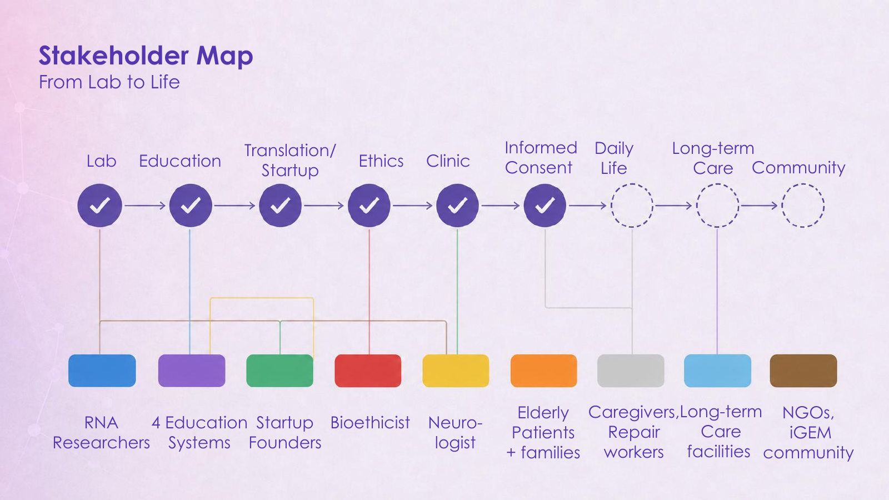

Design
We wanted to show how our work connected the laboratory with people’s lives. We chose nine stages to organise the people and activities around that journey.
HUMAN PRACTICES · REVIEW DRAFT
Our first map connected nine stages. Revisiting it asks us to be more specific about the people behind those stages, what they have shared, and whose voices we still need to hear.
第二版预览 · 点击图中六组标题可查看依据。当前仅供确认，尚未接入 HP 正文。
The short line below each concern records our response. Select a group for the context and limits.
READING THE CONNECTIONS
This map connects recorded concerns to responses in research, communication and everyday support. A solid connection means we have a record of engagement; it does not mean that a treatment, product or partnership was validated.
Builder interviews about bereavement, self-worth and sign-language learning remain in Inclusivity. They inform our reflection on inclusion; they are not evidence of ORCA translation. Education partners and event participants are not automatically counted as project consultations.
A SMALL DBTL · REVISITING OUR MAP
At the HP Summit, the chain was easy for us to explain. That was also where we began to question it: were we showing relationships we had investigated, or a sequence that simply felt right?
We wanted to show how our work connected the laboratory with people’s lives. We chose nine stages to organise the people and activities around that journey.
We made the first “From Lab to Life” map for the Summit. It linked the stages in one chain and placed groups beneath them, giving us a clear route through the presentation.
While presenting it, we noticed that the sequence felt self-evident. It did not show why we included each group, how the links followed from our research, or which voices were still missing. Nine stages were also difficult to take in at once.
For version 2, we returned to the records and organised connections around concerns and responses. We separated recorded engagement from gaps, keeping patients’ and families’ insufficient direct representation visible.
Next check: can a reader identify who shaped a decision, find the record behind it, and recognise a missing perspective? Version 2 is ready for review; we have not yet tested those questions with readers.
We had wanted the first map to show how much ground we had covered. Redrawing it reminded us to make room for what we had not yet understood—and for the people who should have a say in what comes next.

The Summit slide is a historical record. Its checkmarks are not a current audit of completed consultations. Original slide · PDF page 4 ↗